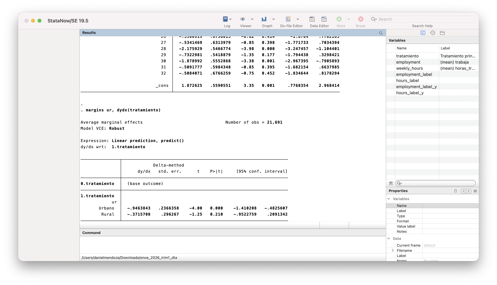
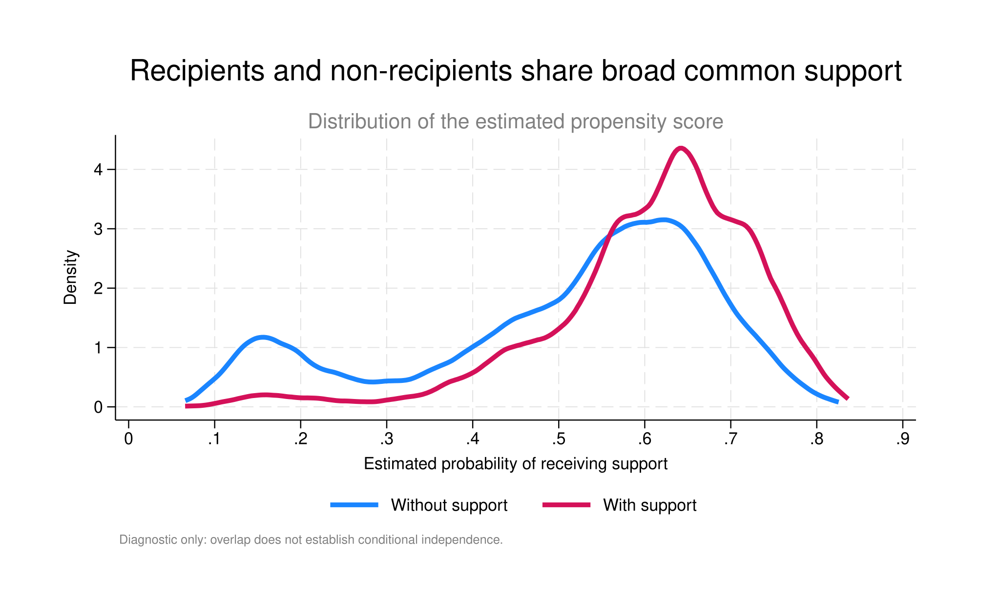
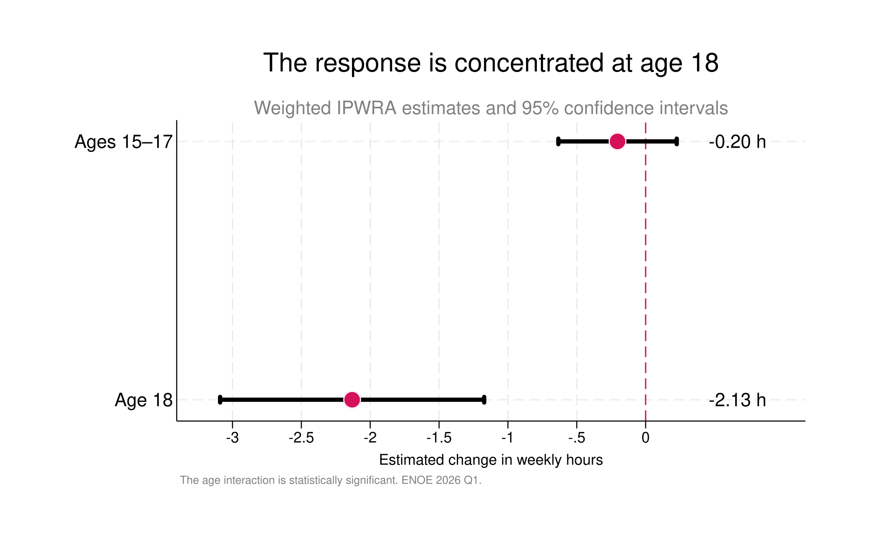

Daniel Mendoza
Work
Blog
Resume
I'm
Daniel Mendoza
,
an economist focused on
econometrics, data analysis, and visualization.

Graph · Propensity-score overlap

Graph · Effects by age

Government support and youth labor supply in Mexico
Econometrics · ENOE · Causal inference · Stata